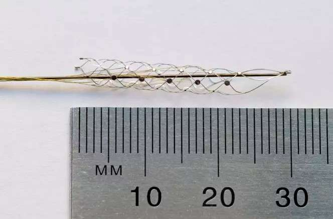

Deux hommes australiens souffrant d'un trouble neurodégénératif ont reçu un implant cérébral appelé Stentrode. Installé dans le cerveau en passant par la jugulaire, il permet de contrôler un ordinateur en pensant à des mouvements du corps.Un nouvel appareil devrait grandement améliorer le quotidien des personnes paralysées. Des chercheurs de l’université de Melbourne en Australie ont commencé les essais cliniques d'un petit implant cérébral appelé Stentrode. Cet appareil a été conçu à l'origine pour permettre à des personnes paralysées de commander un exosquelette. Toutefois, les premiers patients à en bénéficier, atteints d'une maladie des motoneurones (MND), l'utilisent pour contrôler un ordinateur par la pensée.
Cet implant bionique pourrait faireremarcher des personnes paralysées !
Un groupe de personnes paralysées vont recevoir un implant cérébral de la taille d'une allumette. Baptisé « stentrode », il doit leur permettre de manœuvrer un exosquelette grâce aux ondes cérébrales. Fait d'un alliage de nickel et de titane, ce dispositif peu invasif sera implanté dans un vaisseau sanguin à proximité du cortex moteur. Testé avec succès sur des moutons, il va faire l'objet d'un essai clinique dès l'année prochaine.
D'importants progrès ont été accomplis ces dernières années sur les interfaces neuronales. Ils ont ouvert la voie à la création de prothèses de membres ou d'exosquelettes manœuvrables grâce aux ondes cérébrales mais aussi de membres bioniques dotés d'un sens du toucher. Dans tous les cas, ces systèmes reposent sur des implants qui doivent être installés sur le cerveau. Une chirurgie lourde et très invasive qui n'est pas exempte de complications post-opératoires.
Une équipe de chercheurs de l'université de Melbourne (Australie) vient de publier un article scientifique dans la revue Nature Biotechnology dans lequel elle décrit ce qu'elle appelle le « saint Graal de la recherche en bionique ». Il s'agit d'un implant flexible glissé dans un vaisseau sanguin qui peut enregistrer les ondes cérébrales du cortex moteur sans être en contact direct avec le cerveau. Ce « stentrode », comme il a été baptisé, est en fait un stent fait de filaments de Nitinol (alliage de nickel et de titane biocompatible) tressés en nid d'abeilles. À chaque intersection du maillage, des électrodes miniatures vont servir à enregistrer l'activité électrique produite par les neurones au moment où la personne pense à une action physique précise.
Dans le dispositif imaginé par les scientifiques australiens, ces signaux seront ensuite transmis à un ordinateur via un émetteur sans fil relié au stent qui les encodera avant d'envoyer l'ordre à l'exosquelette. Cette structure souple et expansible de trois millimètres de large est placée dans un vaisseau sanguin qui passe sur le cortex moteur grâce à un cathéter inséré depuis l'aine. Une technique utilisée depuis des années en cardiologie. Une fois le cathéter retiré, l'implant va se déployer pour venir se plaquer contre les parois du vaisseau. Protégé à l'intérieur du vaisseau sanguin, il peut demeurer indéfiniment sans causer de dommages. Plus besoin de pratiquer une craniotomie lourde à supporter pour le patient, sans compter les risques d'infection qu'elle entraîne.
Stentrode : pas de débouchés commerciaux avant 2022 !

Voici le « stentrode », l’implant qui est glissé dans un vaisseau sanguin à l’aide d’un cathéter.
Des tests ont été effectués sur des moutons pendant près de 200 jours. À mesure que l'implant était absorbé par les parois du vaisseau sanguin, le signal qu'il enregistrait gagnait en puissance. Il a atteint les 190 hertz, ce qui, d'après les chercheurs, équivaut aux performances actuelles des capteurs implantés directement sur le cerveau.
Un essai clinique doit débuter l'année prochaine. Il se déroulera avec des volontaires paraplégiques ou tétraplégiques triés sur le volet qui devront satisfaire à plusieurs critères : être jeune, avoir subi une lésion de la moelle épinière depuis moins d'un an et être en capacité d'utiliser un exosquelette. De plus, ces patients vont devoir apprendre à utiliser l'interface neuronale, c'est-à-dire à « coder » les signaux pour que l'exosquelette accomplisse le mouvement voulu. Cela revient à réapprendre à se tenir debout et à marcher. Un processus qui demandera des mois d'efforts pour entraîner le cerveau et devenir plus fluide.
Cette interface neuronale ouvre d'autres perspectives. Elle pourrait également être utilisée pour surveiller l'activité cérébrale de personnes atteintes de la maladie de Parkinson, de troubles obsessionnels compulsifs ou de dépression. Encore mieux, elle pourrait servir à émettre un signal pour stimuler le cerveau électriquement en coordination avec un œil bionique. Là encore, la possibilité de venir placer l'implant dans un vaisseau sanguin en contact avec le cortex visuel serait bien moins complexe et risquée qu'une chirurgie.
Il y a donc des perspectives prometteuses mais encore beaucoup de travail pour les faire aboutir. Ce projet a été cofinancé par le gouvernement australien et la Darpa, l'agence de recherche et développement de l'armée américaine. Deux des chercheurs qui ont mis au point cet implant ont créé une entreprise baptisée SmartStent qui va s'employer à commercialiser cette technologie à l'horizon 2022.